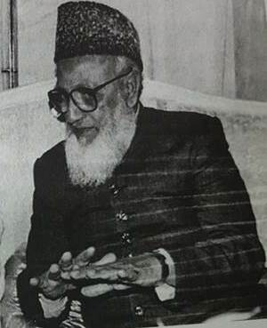
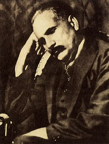

Pakistan has literature in Urdu, Sindhi, Punjabi, Pashto, Baluchi,
Persian, English, and
many other languages.The Pakistan Academy of Letters is a large literary community that promotes literature
and poetry in Pakistan and abroad. The National Library publishes and promotes literature in the country.
Before the 19th century, Pakistani literature consisted mainly of lyric and religious poetry and mystical and
folkloric works. During the colonial period, native literary figures were influenced by western literary realism
and took up increasingly varied topics and narrative forms. Prose fiction is now very popular. 
The national poet of Pakistan, Muhammad Iqbal, wrote poetry in Urdu and Persian. He was a strong proponent of the
political and spiritual revival of Islamic civilisation and encouraged Muslims all over the world to bring about a
successful revolution.[clarification needed] Well-known figures in contemporary Pakistani Urdu literature
include Josh Malihabadi Faiz Ahmed Faiz and Saadat Hasan Manto.
Sadequain and Gulgee are known for their
calligraphy and paintings. The Sufi poets Shah Abdul Latif, Bulleh Shah, Mian Muhammad Bakhsh, and Khawaja
Farid enjoy considerable popularity in Pakistan. Mirza Kalich Beg has been
termed the father of modern Sindhi
prose. Historically, philosophical development in the country was dominated by Muhammad Iqbal, Sir Syed Ahmad
Khan, Muhammad Asad, Maududi, and Mohammad Ali Johar.
Ideas from British and American philosophy greatly shaped philosophical development in Pakistan. Analysts such as
M. M. Sharif and Zafar Hassan established the first major Pakistani philosophical movement in 1947.[clarification
needed] After the 1971 war, philosophers such as Jalaludin Abdur Rahim, Gianchandani, and Malik Khalid
incorporated Marxism into Pakistan's philosophical thinking. Influential work by Manzoor Ahmad, Jon Elia, Hasan
Askari Rizvi, and Abdul Khaliq brought mainstream social, political, and analytical philosophy to the fore in
academia. Works by Noam Chomsky have influenced philosophical ideas in various fields of social and political
philosophy.